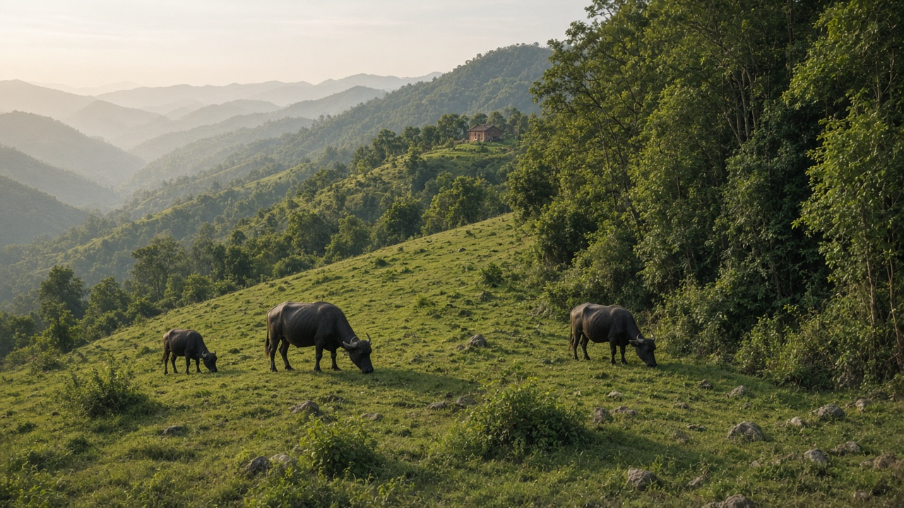
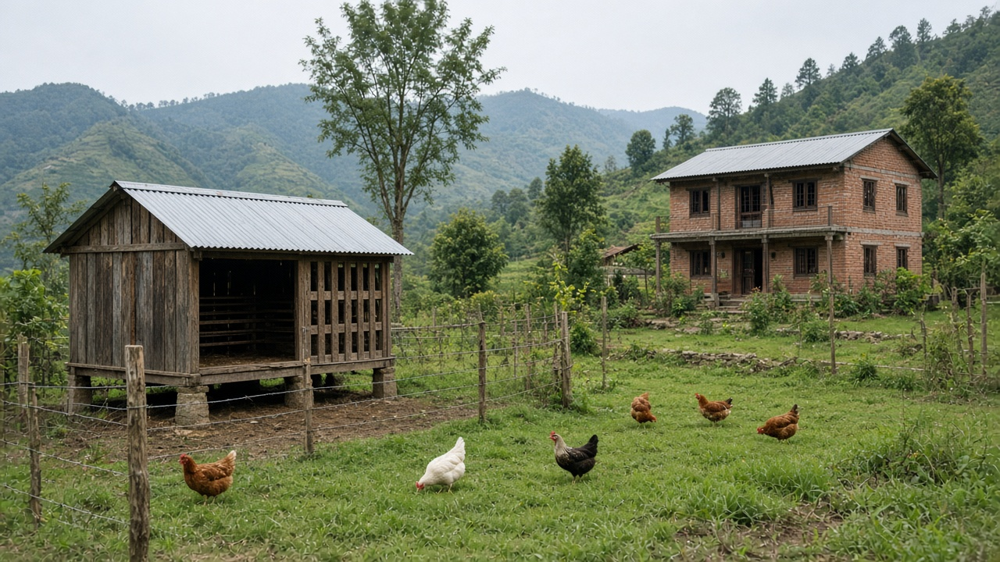
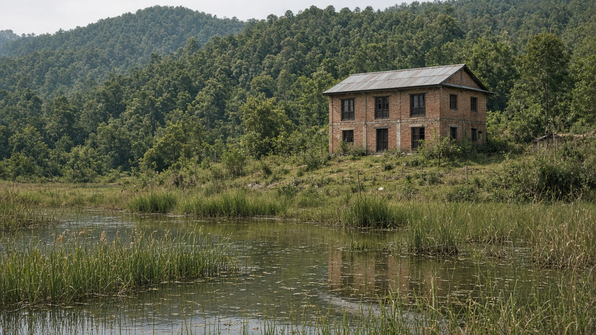

One Health and Zoonotic Disease
Published on August 20, 2026

One Health is the recognition that human, animal, and ecosystem health are a single system. Most emerging infectious diseases in people originate in animals: rabies from dogs and wildlife, avian influenza from birds, Nipah from bats and livestock, leptospirosis from rodents in floodwater, and anthrax from livestock carcasses. Forest clearing, live-animal markets, intensive farming, and climate-driven wildlife stress increase contact at the interface. A pathogen that once circulated only among bats can, after a few mutations and a crowded market, become a human outbreak. Toxicology meets this field when chemical pollution weakens immunity or when antimicrobial residues in farms select resistant zoonotic bacteria.
Surveillance that watches only hospital wards will always be late. Veterinary labs, wildlife mortality reports, and water testing after floods should feed the same dashboard as human case counts. Vaccinating dogs against rabies, separating sick poultry, and safe disposal of carcasses are cheaper than intensive-care wards. Food of animal origin needs slaughter hygiene and cold chains so Salmonella and Campylobacter do not ride into kitchens. People who butcher, milk, or live with livestock need information that does not shame farming but names the risky step—unboiled milk, untreated wounds, or sleeping in the same room as a sick animal.
Governance succeeds when ministries of health, agriculture, and environment share data instead of defending turf. Community health workers and livestock technicians can visit the same village with coordinated messages during a suspected outbreak. Land-use decisions that protect wetlands and reduce unplanned wildlife trade are prevention, not sentiment. One Health is not a slogan for conferences; it is a method for tracing a fever back to a flooded field, a bat roost, or a poultry shed, and for intervening before the next spillover. Environmental health in this frame includes living agents that jump species, not only chemicals that dissolve in water.

एक स्वास्थ्य भनेको मानव, पशु र पारिस्थितिकी तंत्र स्वास्थ्य एउटै प्रणाली हो भन्ने मान्यता हो। मानिसमा देखा पर्ने अधिकांश नयाँ संक्रामक रोग जनावरबाट आउँछन्: कुकुर र वन्यजन्तुबाट रेबिज, चराबाट पक्षी इन्फ्लुएन्जा, चमेरा र पशुधनबाट निपा, बाढीको पानीमा मुसाबाट लेप्टोस्पाइरोसिस, र पशु शवबाट एन्थ्राक्स। वन फँडानी, जीवित जनावर बजार, सघन पालन र जलवायुले ल्याएको वन्यजन्तु तनावले सम्पर्क सतह बढाउँछ। चमेरामा मात्र घुम्ने रोगजनक केही उत्परिवर्तन र भीड बजारपछि मानव महामारी बन्न सक्छ। रासायनिक प्रदूषणले प्रतिरक्षा कमजोर पार्दा वा खेतमा सूक्ष्मजीवरोधी अवशेषले प्रतिरोधी पशुजन्य जीवाणु चयन गर्दा विषविज्ञान यस क्षेत्रसँग भेट्छ।
अस्पताल वार्ड मात्र हेर्ने निगरानी सधैं ढिलो हुन्छ। पशु प्रयोगशाला, वन्यजन्तु मृत्यु रिपोर्ट र बाढीपछि पानी परीक्षणले मानव रोग घटना गणनासँगै एउटै नियन्त्रण पटलमा जानुपर्छ। कुकुरलाई रेबिजविरुद्ध खोप, बिरामी कुखुरा छुट्याउने र शवको सुरक्षित विसर्जन सघन हेरचाह कक्षभन्दा सस्ता छन्। पशु मूलको खानालाई वध सरसफाइ र चिसो शृङ्खला चाहिन्छ ताकि साल्मोनेला र क्याम्पिलोब्याक्टर भान्सामा नचढून्। काट्ने, दुहुने वा पशुधनसँग बस्ने मानिसलाई खेती लज्जित नपार्ने तर जोखिमपूर्ण चरण—नउमालिएको दूध, अनुपचारित घाउ, वा बिरामी जनावरसँगै सुत्ने—नाम दिने जानकारी चाहिन्छ।
शासन तब सफल हुन्छ जब स्वास्थ्य, कृषि र वातावरण मन्त्रालयले क्षेत्र रक्षा होइन तथ्याङ्क बाँड्छन्। सामुदायिक स्वास्थ्य कार्यकर्ता र पशु प्राविधिकले संदिग्ध महामारीमा एउटै गाउँमा समन्वित सन्देश लिएर जान सक्छन्। सिमसार जोगाउने र अव्यवस्थित वन्यजन्तु व्यापार घटाउने भूउपयोग निर्णय रोकथाम हो, भावुकता होइन। एक स्वास्थ्य सम्मेलनको नारा होइन; यो ज्वरोलाई बाढी खेत, चमेरा बास वा कुखुरा गोठसम्म पछ्याउने र अर्को प्रजाति छलाङअघि हस्तक्षेप गर्ने विधि हो। यस ढाँचामा वातावरणीय स्वास्थ्यमा पानीमा घुल्ने रसायन मात्र होइन प्रजाति नाघ्ने जीवित कारक पनि पर्छन्।

एक स्वास्थ्य यह मान्यता है कि मानव, पशु और पारिस्थितिकी तंत्र स्वास्थ्य एक ही प्रणाली हैं। लोगों में उभरने वाले अधिकांश नए संक्रामक रोग पशुओं से आते हैं: कुत्ते और वन्यजीव से रेबीज़, पक्षियों से पक्षी इन्फ्लुएंजा, चमगादड़ और पशुधन से निपा, बाढ़ के पानी में कृंतकों से लेप्टोस्पायरोसिस, और पशु शव से एंथ्रेक्स। वन कटाई, जीवित पशु बाजार, सघन पालन और जलवायु से आया वन्यजीव तनाव संपर्क सतह बढ़ाते हैं। केवल चमगादड़ों में घूमने वाला रोगजनक कुछ उत्परिवर्तन और भीड़ बाजार के बाद मानव प्रकोप बन सकता है। रासायनिक प्रदूषण प्रतिरक्षा कमजोर करे या खेतों में सूक्ष्मजीवरोधी अवशेष प्रतिरोधी पशुजन्य जीवाणु चुनें तो विषविज्ञान इस क्षेत्र से मिलता है।
केवल अस्पताल वार्ड देखने वाली निगरानी हमेशा देर से होती है। पशु प्रयोगशाला, वन्यजीव मृत्यु रिपोर्ट और बाढ़ के बाद जल परीक्षण को मानव मामले गिनती के साथ एक ही पटल पर जाना चाहिए। कुत्तों को रेबीज़ के विरुद्ध टीका, बीमार मुर्गी अलग करना और शव का सुरक्षित निपटान सघन देखभाल कक्ष से सस्ते हैं। पशु मूल के भोजन को वध स्वच्छता और शीत शृंखला चाहिए ताकि साल्मोनेला और कैम्पिलोबैक्टर रसोई में न चढ़ें। काटने, दुहने या पशुधन के साथ रहने वाले लोगों को खेती लज्जित न करने वाली पर जोखिमपूर्ण चरण—न उबाला दूध, अनुपचारित घाव, या बीमार पशु के साथ सोना—नाम देने वाली जानकारी चाहिए।
शासन तब सफल होता है जब स्वास्थ्य, कृषि और पर्यावरण मंत्रालय क्षेत्र रक्षा नहीं आँकड़े बाँटते हैं। सामुदायिक स्वास्थ्य कार्यकर्ता और पशु तकनीशियन संदिग्ध प्रकोप में एक ही गाँव समन्वित संदेश लेकर जा सकते हैं। आर्द्रभूमि बचाने और अव्यवस्थित वन्यजीव व्यापार घटाने वाले भूउपयोग निर्णय रोकथाम हैं, भावुकता नहीं। एक स्वास्थ्य सम्मेलन का नारा नहीं; यह बुखार को बाढ़ खेत, चमगादड़ बसेरा या मुर्गी गोशाला तक पीछा करने और अगली प्रजाति छलाँग से पहले हस्तक्षेप करने की विधि है। इस ढाँचे में पर्यावरणीय स्वास्थ्य में जल में घुलने वाले रसायन ही नहीं प्रजाति लाँघने वाले जीवित कारक भी शामिल हैं।